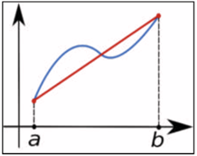

La derivación numérica es una técnica empleada para aproximar la derivada de una función cuando esta no se conoce de forma analítica o sus datos solo están disponibles en puntos discretos.
La derivada de una función se define como el límite:
$$ f'(x) = \lim_{h \to 0} \frac{f(x+h) - f(x)}{h} $$
Diferencia hacia adelante (Forward):
$$ f'(x) \approx \frac{f(x+h) - f(x)}{h} $$
Diferencia hacia atrás (Backward):
$$ f'(x) \approx \frac{f(x) - f(x-h)}{h} $$
Diferencia centrada (Central):
$$ f'(x) \approx \frac{f(x+h) - f(x-h)}{2h} $$
La fórmula centrada es más precisa: \( O(h^2) \) vs \( O(h) \) para las demás.
Permite estudiar tasas de cambio cuando solo se cuenta con datos discretos. Fundamental en optimización, simulación, análisis científico e ingeniería.
En una planta de bebidas se mide la producción acumulada para estimar la tasa de producción (botellas/minuto) utilizando diferencias finitas.
Datos discretos observados:
P(t) = [0, 480, 1020, 1570, 2100, 2610, 3100]
t (min)= [0, 10, 20, 30, 40, 50, 60]
| t (min) | Adelante | Centrada | Atrás |
|---|---|---|---|
| 0 | 48.0 | N/A | N/A |
| 10 | 54.0 | 51.0 | 48.0 |
| 20 | 55.0 | 54.5 | 54.0 |
| 30 | 53.0 | 54.0 | 55.0 |
| 40 | 51.0 | 52.0 | 53.0 |
| 50 | 49.0 | 50.0 | 51.0 |
| 60 | N/A | N/A | 49.0 |
Interpretación de resultados
Conclusión
La diferenciación numérica permite evaluar la eficiencia del proceso y tomar decisiones industriales basadas en datos reales.
La integración numérica es un conjunto de métodos utilizados para calcular el área bajo una curva de forma aproximada, cuando no es posible obtener la integral exacta analíticamente.
Se utiliza cuando:
Permite obtener resultados para áreas, fuerzas, energía, calor, consumo energético y muchos procesos físicos usando datos reales o funciones complejas.
Aproxima el área bajo la curva usando trapecios. Reemplaza la curva por líneas rectas entre puntos conocidos.
Fórmula general:
\[ \int_a^b f(x)\,dx \approx \frac{h}{2} \left[f(x_0) + 2 \sum_{i=1}^{n-1} f(x_i) + f(x_n)\right] \]
Donde:
Imagen ilustrativa del método del trapecio:
Luego la reemplazas en tu proyecto
Consideremos la integral:
\[ \int_0^6 (x^2 + 1) \,dx \]
Intervalo:
\[ a = 0,\quad b = 6,\quad n = 6 \]
Calculamos \(h\):
\[ h = \frac{6 - 0}{6} = 1 \]
Completamos la tabla:
| \( f(x_0)=f(a)=f(0)=1 \) |
| \( f(x_1)=f(a+h)=f(0+1)=f(1) \) |
| \( f(x_2)=f(a+2h)=f(0+2)=f(2) \) |
| \( f(x_3)=f(a+3h)=f(0+3)=f(3) \) |
| \( f(x_4)=f(a+4h)=f(0+4)=f(4) \) |
| \( f(x_5)=f(a+5h)=f(0+5)=f(5) \) |
| \( f(x_6)=f(b)=f(6) \) |
La última columna se halla reemplazando el valor que nos da “x” en la tercera columna en la función:
\[ e^{-x^2} \]
El siguiente paso es hallar el área total con la fórmula:
\[ \frac{h}{2} \left[\, f(x_0) + 2\sum_{i=1}^{n-1} f(x_0 + ih) + f(x_n) \,\right] \]
Esto se resume en sumar todos los términos de la mitad, multiplicarlos por 2 y agregar \(f(x_0)\) y \(f(x_n)\), obteniendo:
\[ A_T = \frac{1}{2} \left[ 1 + 2(2.13136) + 0.01832 \right] \]
\[ A_T = \frac{5.28104}{6} \approx 0.88017333 \]
Resultado final: \(A_T \approx 0.88017\)
Se desea estimar el consumo total de energía en una línea de producción durante 6 horas. El consumo varía según la carga de trabajo.
\[ E = \int_0^6 (e^{0.1t} + t^2) \, dt \]
Datos: mediciones cada 1 hora → \(n = 6\), \(h = 1\)
Tabla de valores:
| t (h) | f(t) |
|---|---|
| 0 | 1 |
| 1 | 1.10517 + 1 |
| 2 | 1.22140 + 4 |
| 3 | 1.34986 + 9 |
| 4 | 1.49182 + 16 |
| 5 | 1.64872 + 25 |
| 6 | 1.82212 + 36 |
Resultado final ≈ 33.0797 kWh
Gráfica de la función integrada.
Gráfica de la función y la recta tangente aproximada (derivada central).
1) Escribe una función con el teclado o manualmente (ej: sin(x)+x^2)
2) Usa el teclado para símbolos √, π, e, ^, paréntesis, etc.
3) En 'h' puedes poner coma o punto (ej: 0,1 ó 0.1) — se corrige automáticamente.
4) Pulsa Calcular y luego Paso a paso para ver la explicación.